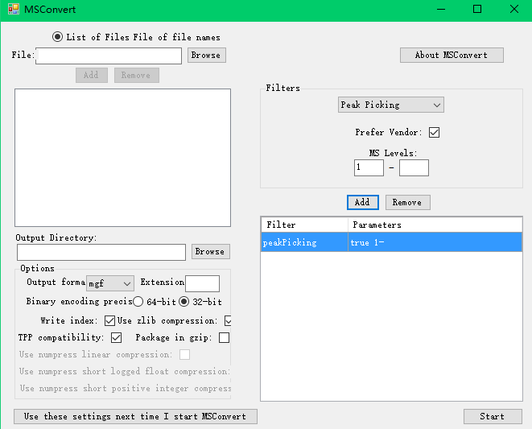
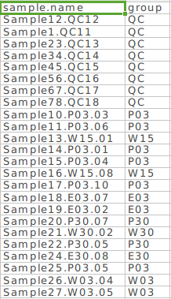
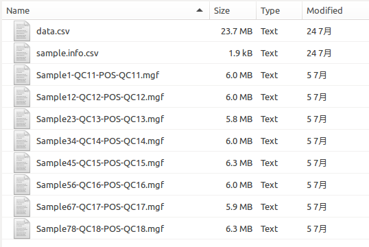
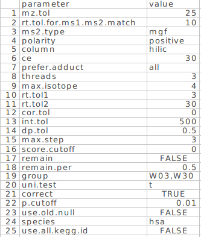
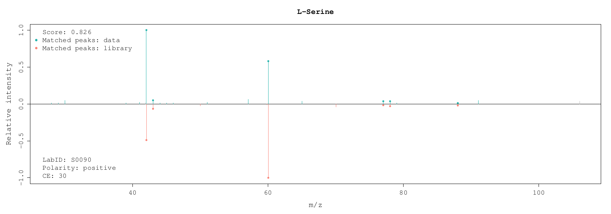
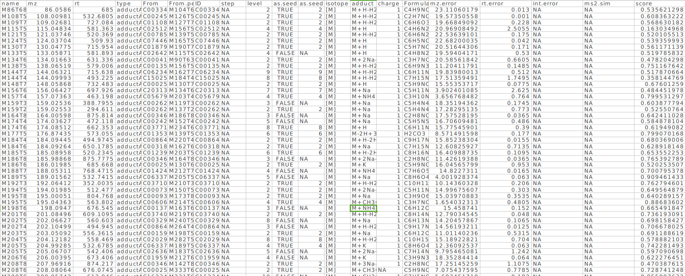
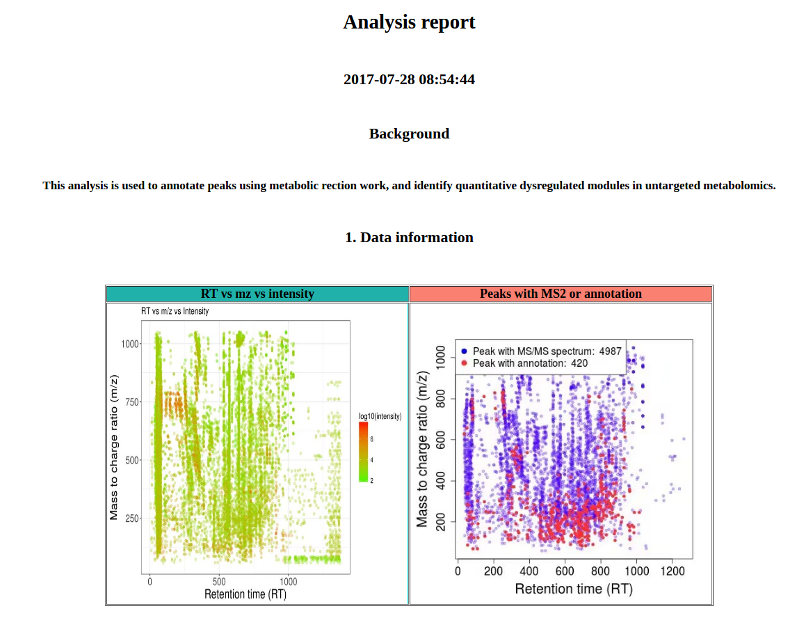

Ⅰ 数据准备
MetDNA需要准备的数据包括一级数据peak table(csv格式)，二级数据(mgf格式)和样品信息sample.info(csv格式)。点击下载正离子demo数据和负离子demo数据。
Table 1: demo数据信息
| 组别 | 个数 | 含义 |
|---|---|---|
| QC | 8 | QC |
| W03 | 10 | 野生型3天 |
| W30 | 10 | 野生型30天 |
| E03 | 10 | 突变型E3天 |
| E30 | 10 | 突变型E30天 |
| P03 | 10 | 突变型P3天 |
| P30 | 10 | 突变型P30天 |
1. 一级数据
一级数据可以是使用XCMS，MZmine，MS-DIAL或者其他软件处理之后的数据。第一列为代谢物峰的名字，”name”，第二列为”mz”，第三列为保留时间(RT)，且单位必须为秒，其他为样品的峰强度。

2. 二级数据
二级质谱原始数据可以是使用QC样品采集的DDA或者targeted MS/MS数据。对于DDA数据来说，也可以是分段采集的二级数据。质谱原始二级数据需要使用ProteoWizard软件转为mgf格式，转换时参数设置参考下图。二级数据最多不能超过十个。

3. 样品信息
样品信息是样品的分组信息。第一列是样品名，”sample.name”，第二列是样品的分组信息，”group”。

Ⅱ 数据整理
如果是正离子数据，请建立一个新的文件夹，命名为”POS”，如果是负离子数据，请建立一个新的文件夹命名为”NEG”，然后将一级数据，二级数据和样品信息放置于此文件夹下。并将该文件夹设置为工作路径。现在MetDNA部署在小服务器上，因此可以将数据放在小服务器中(labdata)。例如”V:/workreport/申小涛/demo/fly/POS”。

|
|
Ⅲ 数据处理
1. 只对正离子或者负离子处理
所有的步骤可以使用一个函数MetDNA全部完成。
运行函数MetDNA
|
|
参数含义如下：
- ms1.file：一级数据的名字。
- polarity：数据采集极性，”positive”或者”negative”。
- column：使用的柱子类型，”hilic”或者”rp”。
- ce：二级采集的碰撞能量，支持”10”，”15”，”20”，”25”，”30”，”35”，”35,15” (35±15)，”40”，
“45”，”50”，”55”，”60”，”65”，”70”。 - prefer.adduct：使用那些加合物形式的注释用于RT预测模型的建立，默认使用所有的注释，推荐正离子模式下使用”M+H”，负离子模式下使用”M-H”。
- use.default.md：进行保留时间预测模型建立时，是否使用默认的分子描述符，如果设置为FALSE，则会根据你的数据自动选择分子描述符。
- threads：使用线程数，默认为3，可以根据电脑本身配置进行修改。
- group：要对哪些分组的样品进行分析，注意，计算fold change时，使用后面的样品除以前面的样品。
- uni.test：单变量分析的方法，”t”，Student t test；”wilcox”，Wilcox test。
- correct：是否需要对p值进行FDR校正。
- p.cutoff：选择dysregulated peak时的p值cutoff。
- species：所研究样品的物种来源，”dme”，果蝇；”hsa”，人类；”mmu”，小鼠；”rat”，大鼠，”bta”，牛；”gga”，Gallus gallus (鸡)；”dre”，Danio rerio (斑马鱼)；”cel”，Caenorharomyces elegans (线虫)；
“sce”，Saccharomyces cerevisaiae (酵母)； “ath”，Arabidopsis thaliana (拟南芥)；
“smm”，Schistosoma mansoni；”pfa”，Plasmodum falciparum 3D7；
“tbr”，Trypanosoma brucei；”eco”， Escherichia coli K-12 MG1655(大肠杆菌)；
“ppu”，Pseudomonas putida KT2440；”syf”，Synechococcus elongatus。
2. 对正负数据合并分析
正负离子分别处理之后，可以使用函数MetModule2合并正负离子模式的鉴定结果，进行dysregulated network analysis。
运行函数MetModule2
|
|
参数含义如下：
- group：要对哪些分组的样品进行分析，注意，计算fold change时，使用后面的样品除以前面的样品。
- uni.test：单变量分析的方法，”t”，Student t test；”wilcox”，Wilcox test。
- column：使用的柱子类型，”hilic”或者”rp”。
- correct：是否需要对p值进行FDR校正。
- p.cutoff：选择dysregulated peak时的p值cutoff。
- threads：使用线程数，默认为3，可以根据电脑本身配置进行修改。
- species：所研究样品的物种来源，”dme”，果蝇；”hsa”，人类；”mmu”，小鼠；”rat”，大鼠，”bta”，牛；”gga”，Gallus gallus (鸡)；”dre”，Danio rerio (斑马鱼)；”cel”，Caenorharomyces elegans (线虫)；
“sce”，Saccharomyces cerevisaiae (酵母)； “ath”，Arabidopsis thaliana (拟南芥)；
“smm”，Schistosoma mansoni；”pfa”，Plasmodum falciparum 3D7；
“tbr”，Trypanosoma brucei；”eco”， Escherichia coli K-12 MG1655(大肠杆菌)；
“ppu”，Pseudomonas putida KT2440；”syf”，Synechococcus elongatus。
运行函数analysisReport
|
|
Ⅳ 运行结果
1. 正离子或者负离子的运行结果
MetDNA函数运行结束之后，所有的运行结果都存放在设置的路径中，包含二级谱图匹配结果，MRN注释结果，dysregulated network分析结果以及分析报告。如图5所示。

(1) MetDNA.parameters.csv
记录此次运行所使用的参数。

(2) ms2_match_result_POS
二级谱图匹配结果。包括一个csv文件，ms2.match.annotation.result.csv和一个文件夹，MS2_match_spectra。ms2.macth.annotation.result.csv是二级谱图匹配之后的结果，与MetAnalyzer处理之后的结果相同；MS2_match_spectra文件夹中包含了所有二级匹配图(Figure 6)。

(3) MRN_annotation_result_POS
二级谱图匹配结果。包括一个csv文件，ms2.match.annotation.result.csv和一个文件夹，MS2_match_spectra。ms2.macth.annotation.result.csv是二级谱图匹配之后的结果，与MetAnalyzer处理之后的结果相同；MS2_match_spectra文件夹中包含了所有二级匹配图(Figure 6)。

二、分步骤进行数据分析
1. 使用二级谱图进行注释
运行函数ms2Annotation。
|
|
参数含义如下：
- ms1.file：一级数据的名字。
- polarity：数据采集极性，”positive”或者”negative”。
- column：使用的柱子类型，”hilic”或者”rp”。
- ce：二级采集的碰撞能量，支持”10”，”15”，”20”，”25”，”30”，”35”，”35,15” (35±15)，”40”，
“45”，”50”，”55”，”60”，”65”，”70”。
输出的结果存放在ms2_match_annotation_result文件夹内:
- ms2.match.annotation.result.csv：二级谱图注释结果。
- MS2_match_spectrum：二级谱图匹配图。
- intermediate_data：中间数据文件夹。


2. 基于MRN的注释
运行函数metABM。
|
|
参数含义如下：
- prefer.adduct：使用那些加合物形式的注释用于RT预测模型的建立，默认使用所有的注释，推荐正离子模式下使用”M+H”，负离子模式下使用”M-H”。
- use.default.md：进行保留时间预测模型建立时，是否使用默认的分子描述符，如果设置为FALSE，则会根据你的数据自动选择分子描述符。
- polarity：数据采集极性，”positive”或者”negative”。
- column：使用的柱子类型，”hilic”或者”rp”。
- threads：使用线程数，默认为3，可以根据电脑本身配置进行修改。
输出的结果存放在MRN_annotation_result文件内：
- MRN.annotation.result.csv：metABM注释之后的结果。
- metABM.parameters.csv：metABM的参数。
- intermediate_data：中间数据文件夹。

3. Dysregulated network分析
运行函数metModule。
|
|
参数含义如下：
- group：要对哪些分组的样品进行分析，注意，计算fold change时，使用后面的样品除以前面的样品。
- uni.test：单变量分析的方法，”t”，student t test；”wilcox”，wilcox test；”anova”，ANOVA分析。
- polarity：数据采集极性，”positive”或者”negative”。
- column：使用的柱子类型，”hilic”或者”rp”。
- correct：是否需要对p值进行FDR校正。
- p.cutoff：选择dysregulated peak时的p值cutoff。
- threads：使用线程数，默认为3，可以根据电脑本身配置进行修改。
- species：所研究样品的物种来源，”dme”，果蝇；”hsa”，人类；”mmu”，小鼠；”rat”，大鼠，”bta”，牛；”gga”，Gallus gallus (鸡)；”dre”，Danio rerio (斑马鱼)；”cel”，Caenorharomyces elegans (线虫)；
“sce”，Saccharomyces cerevisaiae (酵母)； “ath”，Arabidopsis thaliana (拟南芥)；
“smm”，Schistosoma mansoni；”pfa”，Plasmodum falciparum 3D7；
“tbr”，Trypanosoma brucei；”eco”， Escherichia coli K-12 MG1655(大肠杆菌)；
“ppu”，Pseudomonas putida KT2440；”syf”，Synechococcus elongatus。
输出的结果存放在Dysregulated_network_analysis_result文件内：
- metModule.parameters.csv：metModule的参数。
- DNA.annotation.result.csv：DNA分析之后的注释结果。
- volcano.plot.pdf：火山图。
- Module_information：包含了module分析的所有信息。
- pathway_information：包含了pathway分析的所有信息。
- intermediate_data：中间数据文件夹。

4. 生成分析报告
运行函数analysisReport。
|
|
输出的结果存放在Analysis_report文件夹内：
- 一份html格式的分析报告。
